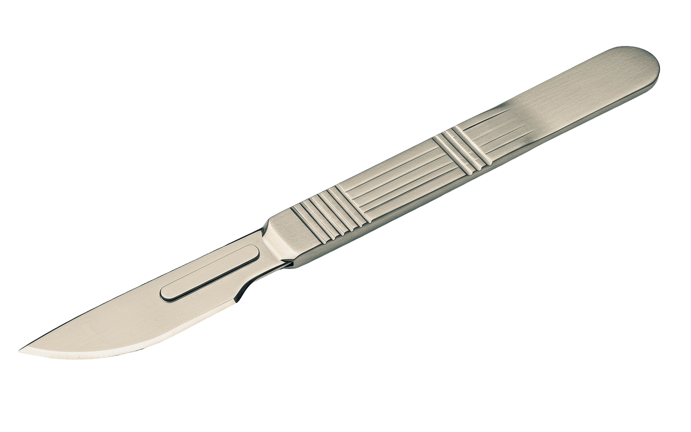

Dossier #0671

- Leeftijd: 47 jaar
- Geboortedatum:21-12-1978
- Geslacht: Man
- Gestalte: 1m85
- Extra: Workaholic, faalangst
Laatst gezien:
Uintah Basin Medical Center, Uintah County, Utah, Verenigde Staten.
Dr. Igmar is een huisdokter die 35 jaar geleden verhuisd is naar Utah. Hij hoorde mensen om hulp roepen en rende zo snel mogelijk naar de plaats waar de stemmen vandaan kwamen. Eenmaal hij op de bestemming arriveerde werd alles donker voor zijn ogen… Toen werd hij wakker in de ranch.
Inventaris:
